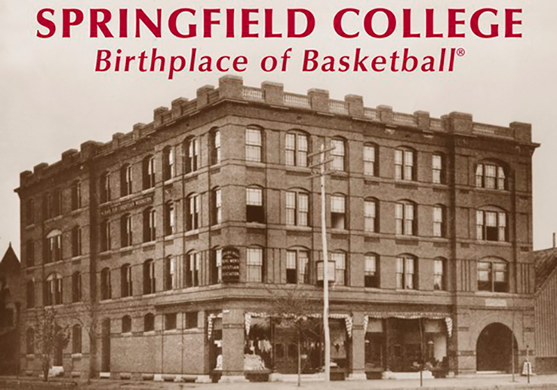
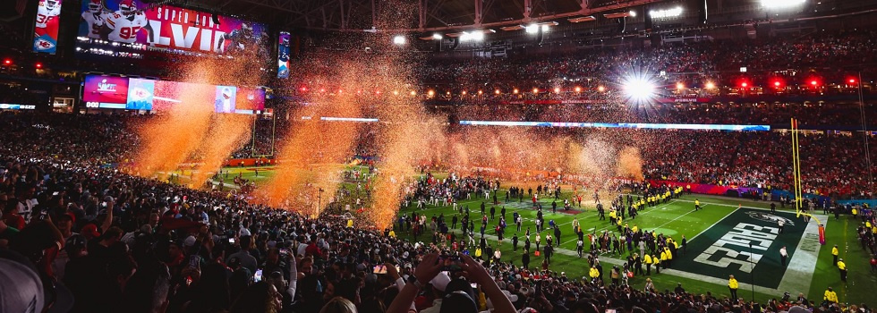

Historia del Baloncesto
Descubre el fascinante origen y evolución del baloncesto a lo largo de los años.
Origen del Baloncesto
El baloncesto fue inventado por James Naismith en 1891 en la YMCA de Springfield, Massachusetts. Naismith buscaba crear un nuevo deporte que pudiera practicarse en espacios cerrados durante el invierno. El primer juego se jugó con un balón de fútbol y dos cestas de duraznos como canastas.
Desde entonces, el baloncesto se ha convertido en uno de los deportes más populares y practicados en todo el mundo. Ha evolucionado en términos de reglas, equipos, competiciones y jugadores destacados.
Desarrollo y Expansión
A lo largo de las décadas, el baloncesto se ha desarrollado y ha experimentado cambios significativos. Se han establecido reglas estándar, se han formado ligas profesionales y se han celebrado competiciones internacionales, como los Juegos Olímpicos y la Copa Mundial de Baloncesto.
El baloncesto ha ganado popularidad en todos los rincones del mundo, con millones de jugadores y fanáticos apasionados. Grandes equipos y jugadores icónicos han dejado huella en la historia del baloncesto, como los míticos Boston Celtics de la NBA y leyendas como Michael Jordan y LeBron James.

Impacto y Legado
El baloncesto ha tenido un impacto significativo en la sociedad, trascendiendo las canchas y convirtiéndose en un fenómeno cultural. Ha inspirado a jóvenes atletas, ha promovido la inclusión y ha sido una plataforma para el talento y la determinación.
Además, el baloncesto ha generado una industria multimillonaria, con contratos millonarios para jugadores, acuerdos de patrocinio y transmisiones televisivas a nivel mundial. También ha sido una herramienta para promover valores como el trabajo en equipo, el respeto y el espíritu deportivo.
